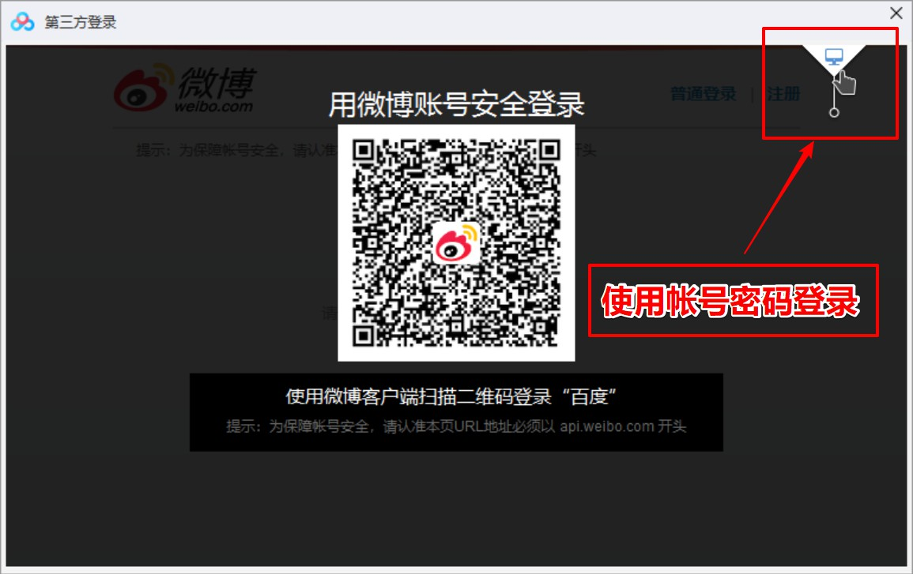

20200910 重大更新：
百度网盘PC客户端从版本7.0.4起封锁了帐号共享的通道，登录后将提示存在安全风险，需要验证。一、打开百度网盘PC客户端，点击微博登录
注：如果你已经登录过其他帐号，则需要先清空IE的登录缓存信息之后，才能登录另外一个帐号，具体操作请看：
清空IE的登录缓存信息
二、点击右上角的按钮，使用帐号密码登录
三、输入公众号提供的帐号密码，去掉下次自动登录复选框，然后按回车键进行登录
四、提示脚本错误时，点击【是】
五、提示网络繁忙时，点击【重试】
六、登录成功，开始享受SVIP会员下载速度~
七、如果登录之后，提示帐号存在安全风险需要验证，则需要卸载当前版本，安装v7.0.3版本方可登录： 点击下载7.0.3版本